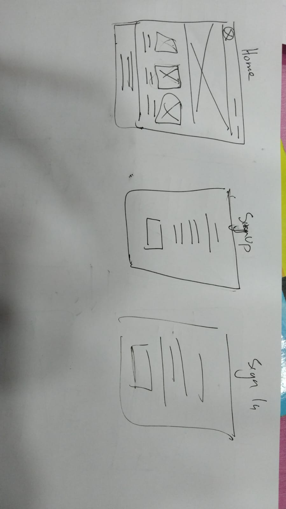
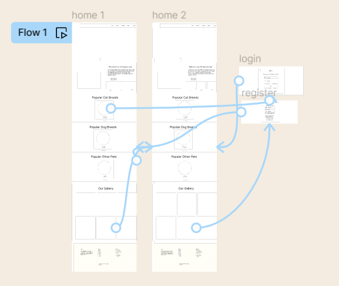
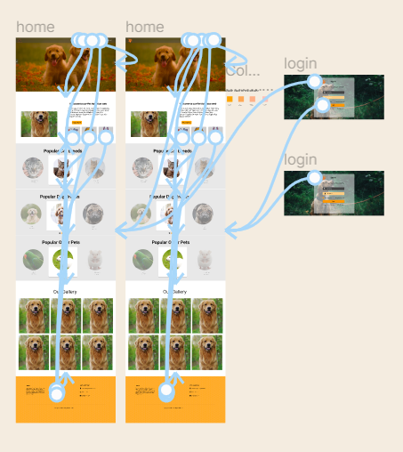
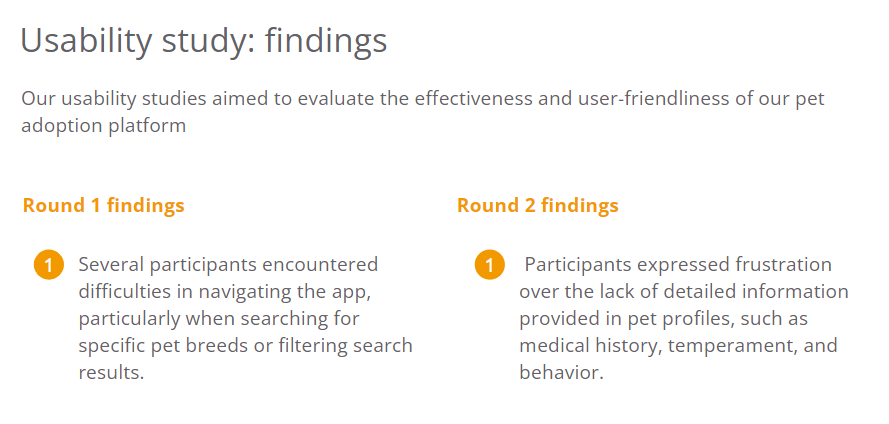

Website designed to streamline the pet adoption process.
Feburary 2024 to May 2024
Initially, we assumed users needed better search tools, but our research showed they also valued detailed pet profiles and clear communication. This led us to focus on adding comprehensive profiles to help users choose pets according to breed and other preferences.
The project's objective was to develop a user-friendly platform that links prospective pet owners and available animals, improving the effectiveness of the adoption procedure.
As the UX designer, my role in the pet adoption project involved conceptualizing, designing, and refining the user experience of the PawsConnect mobile app. This encompassed everything from initial ideation to conducting usability tests and iterating on feedback to create a polished final product.
User Research, Wireframing, Prototyping
The target audience included individuals and families passionate about adopting pets, as well as shelter staff and volunteers. The app catered to those seeking to adopt pets and those responsible for managing and promoting pet adoptions at shelters and rescues.
Key challenges included balancing the need for comprehensive pet profiles and clear communication with shelters against the constraints of mobile app design, such as limited screen space. Additionally, ensuring the app was accessible to users of all ages and technical abilities was a priority.
Users prioritize clear communication and detailed pet profiles over advanced search functionalities.
This highlights the importance of prioritizing information accessibility and transparency in design.
Moving forward, designs will emphasize intuitive interfaces and comprehensive pet profiles to empower users to make informed adoption decisions.
Create a visual representation that stakeholders can use to provide feedback and guide the development of the digital platform.
Create a visual prototype that accurately represents the functionalities and layout of the digital platform,
allowing stakeholders to visualize the final product and provide feedback.
A polished, visually appealing homepage with a clean layout featuring a top navigation bar, search bar, and prominent buttons for browsing adoptable pets and signing up. High-quality images and a welcoming color scheme invite users to explore.
Detailed, high-fidelity pet profile page showcasing a large, high-resolution photo of the pet. The profile includes comprehensive information such as the pet’s name, breed, age, gender, description, health status, and adoption status. Interactive elements like "Favorite," "Share," and "Contact Shelter" buttons are clearly visible and easily accessible..
A comprehensive, high-fidelity adoption application form with well-organized fields for personal information, living situation, and pet preferences. The design includes clear instructions and tooltips, ensuring users can complete the application smoothly. The use of a modern, clean aesthetic makes the process feel straightforward and welcoming..
Our usability studies aimed to evaluate the effectiveness and user-friendliness of our pet adoption platform
One research participant observed, "The detailed pet profiles and easy navigation make it so much easier to find the perfect pet." These design enhancements resulted in a more intuitive and pleasurable user experience. This encouraging comment highlights how well our improvements worked.
The project highlighted the importance of thorough user research and user-centered design, enabling us to correct our preconceived notions and guide our design choices through face-to-face interactions with potential adopters and shelter employees, emphasizing the need for iterative feedback.